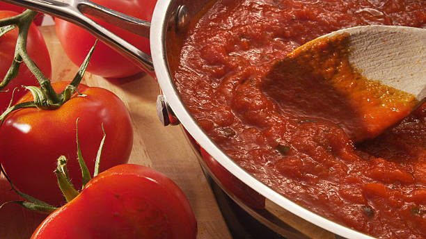

A Marinara Sauce thats Easy and Elevated

Description
This marinara sauce is the perfect combination of being easy to make,
and having a flavor far beyond what any premade sauce will give you.
Ingredients
- 1 1/2 large white onions, diced
- olive oil
- 4 quarts of san marzano tomatos (Canned is ok!
Just make sure they have a D.O.P. label!)
- 1/4th cup of dry red wine
- 1 table spoon of dried italian seasoning
- 1/2 teaspoon of crushed red pepper
- 2 cloves of garlic, microplaned or sliced very thinly
- 1/2 a cup of chiffonade basil
- kosher salt
- fresh ground pepper (not pre ground pepper!! You deserve better!!)
- 2 tomato stems (optional)
- 4 ounces of mushrooms, diced (optional)
- 8 ounces of a protein of your choice, I.E. ground beef, or tofu. (optional)
Steps
- This step is the most important, and can be applied to any recipe.
Get in the right mindset! Its ok to play with your food. If you think im
crazy for using white onions instead of yellow, go for it! There will be
many more meals to come, and failure is always the catalyst for greatness.
The best way to become an amazing chef is to keep making and fixing mistakes,
so lets get into a recipe that has been an American staple for years.
- Start by taking a large stock pot, and putting a layer of olive oil on
the bottom. Just enough to coat it, and not so much your onions will be covered.
Turn the heat on medium low, and add the onions. Always be aware of your pan
temperature, if they are browning its too hot! If they arent making any noise,
its way too cold! Cooking these onions will take much longer than most online
recipes would have you believe, upwards of 30-60 minutes so be prepared to stir
for some time. By the time you're ready for the next step they should be halfway
translucent.
- Now that the onions are mostly cooked, its time to add the garlic. Garlic cooks
much faster than onions, so we want to add it later. Continue to keep an eye
on your heat, garlic slices will burn quickly. If you chose to add diced mushrooms, add
them now too.
- Once your onion and garlic mixture is almost ready, add your dried italian
seasoning and crushed red pepper. Giving the dried herbs time to sautee in your
olive oil will rehydrate them and bring out their natural aromas and flavors.
- Now that the onion and garlic is fully cooked, we want to deglaze the bottom
of the pan with our dry red wine. Turn the heat up just a little, then throw it in.
Continuously stir the mixture until the red wine has completely reduced. The wine
should have thickened, and when you smell the mixture there should be no sharp
alcohol smell.
- Now add your san marzano tomatos, or fresh concasse tomatos that you have prepared.
Simmer and stir occasionally, until tomatos no longer taste sharp and acidic (around 2 hours).
If the sauce becomes too thick, you can use water to thin the mixture.
- If you have decided to add a protein to the sauce, begin to sautee it while the sauce
is reducing. Once your protein has been seared, cooked through, and seasoned with salt
and pepper, allow it to drain thoroughly. We dont want to add a bunch of fat to the sauce.
- Once your sauce tastes like it has reduced appropriately, turn off the heat and then
add your chiffonade basil and protein. Mix thoroughly then add salt and freshly ground
pepper to taste.
- Now, a final step to really elevate your sauce and feel clever, allow the sauce to
cool overnight with a few fresh tomato stems in it. You know that beautiful tomato
fragrance you get when picking tomatos out of the garden? It doesnt come from the fruit,
but rather the plant itself. With how closely intertwined our sense of smell and taste are
allowing the fresh stem to sit in the sauce overnight will give it the taste of tomatos
so fresh people wont believe they are canned tomatos even if you tell them. The day you
plan to use the sauce, slowly reheat it in a stock pot on low. If the sauce is too thick
or salty, adjust it with fresh water.